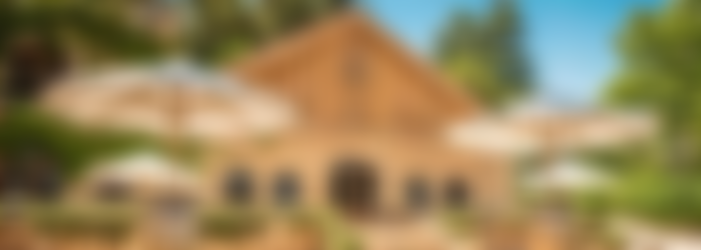
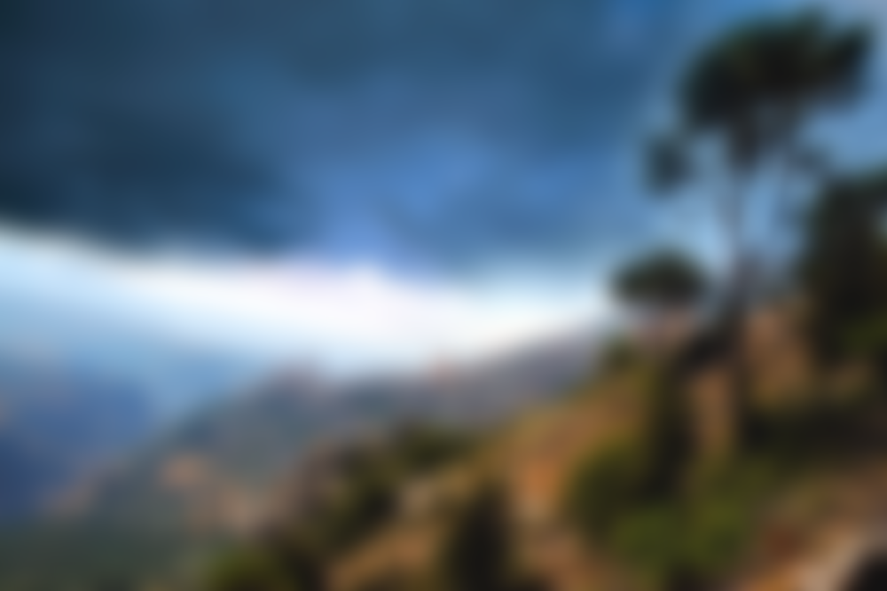
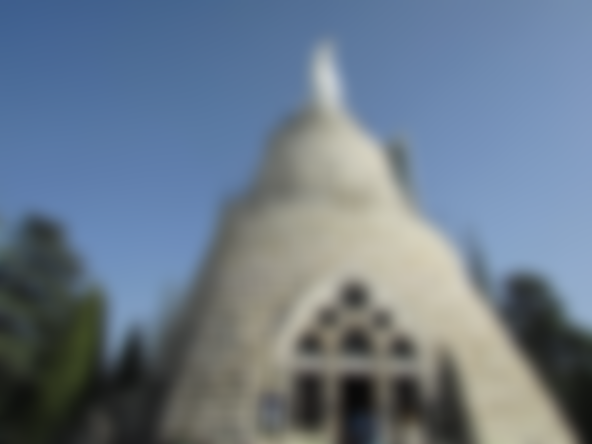
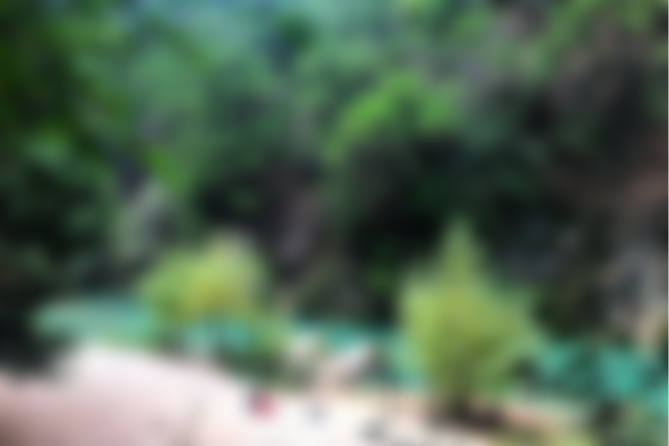
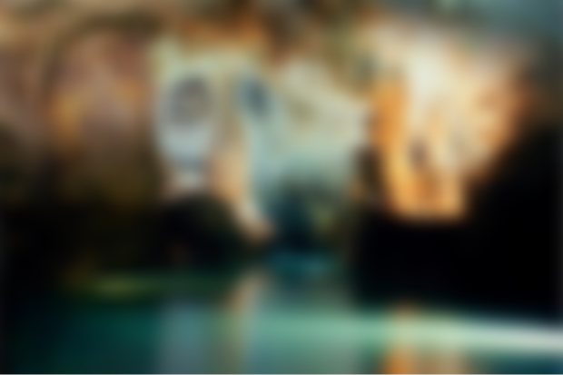
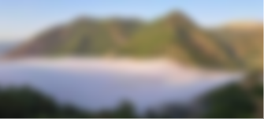

Château Ksara
Bcharré
Harissa
Chouwen
Jeita Grotto
Jabal Moussa
Chateau Ksara Wines
Chateau Ksara, the country’s oldest winery, began life in 1857 when
Jesuit Fathers inherited and began farming a 25-hectare plot of land to
produce Lebanon’s first non-sweet red wine. In doing so they laid the
foundations of Lebanon’s modern wine industry. In 1973, the Vatican
encouraged its monasteries and missions around the world to sell off any
commercial activities. When then order to sell came through, the winery
was optioned to a consortium of Lebanese businessmen.

Bcharré
Bcharré, whose patron saint is Mar Seba [of Cappadocia], is a Lebanese
town at 1,650 m of altitude, near the Kadisha Valley. The town is
believed to derive its name from the Phonetician "Beit Esh-Shari"
meaning "The House of Ishtar" - a goddess worshipped by the Phoenicians
(and King Solomon) before monotheism.

Harissa
Harissa is a mountain village in Lebanon. The village, which is located
650 meters above sea level, is home to an important Lebanese pilgrimage
site, Our Lady of Lebanon. The village is located 20 km north of Beirut,
and accessible from the coastal city of Jounieh either by road or by a
nine-minute journey by a gondola lift, known as the “Téléférique”. It
attracts both pilgrims and tourists who want to enjoy views of the bay
of Jounieh. The pilgrimage site is a huge 15-ton bronze (and painted
white) statue of Virgin Mary, known as Our Lady of Lebanon, with her
arms outstretched. The statue was made at the end of the 19th century
and inaugurated in 1908. Inside the statue’s base there is a small
chapel. A huge modernistic Maronite cathedral built of concrete and
glass stands right beside the statue.

Chouwen
A paradise nestled in the heart of nature. It isn’t an ordinary lake
which carries water or treasure, it’s a healing lake which carries life.
Like any old Lebanese town, Chouwen, that beautiful old town in the
north, has its culture, its traditional houses, its shops, and its food.
However, there is one thing that makes Chouwen a special marvel in its
own right, and earned it the nickname Jannat Chouwen or the “Chouwen
Eden.” It goes beyond the beauty of a traditional Lebanese village. It
is the dream place for hikers and nature lovers, and also for those who
want to get to admire something unique.

Jeita Grotto
Jeita Grotto, the longest cave in the Middle East, is situated
approximately 11 miles (18km) north of Beirut. It consists of two
separate, but interconnected, limestone caves, and boasts a length of
5.6 miles (9km). One of the worlds most amazing agglomerations of
stalactites and stalagmites, Jeita Grotto is widely considered to be the
pride of Lebanon, and featured as a finalist in the New 7 Wonders of
Nature competition.

Jabal Moussa
Nature travelers, here is a beautiful place you will love to visit in
Lebanon on your next trip to the country. Jabal Moussa, one of the three
biosphere reserves in Lebanon, has a great day of discovery in store for
you with family, friends or alone. Come and marvel at the heart of an
exceptionally rich biodiversity made up of more than 724 species of
flora, 137 species of migratory birds and 25 species of mammals.
